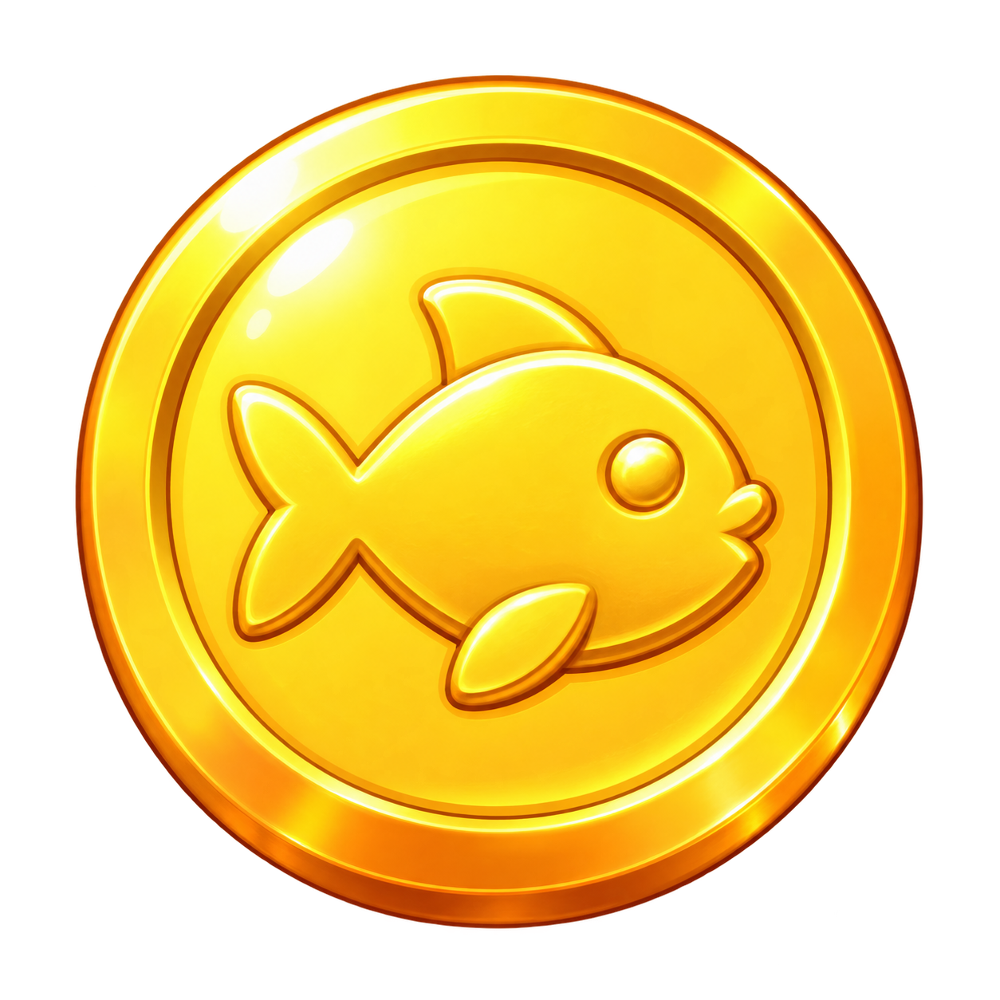

MY LITTLE OCEAN작은 구피와 시작하는 바다
보유 코인

100$2 마리사료 0 / 3
이번 바다의 목표신비한 알 부화시키기
0 / 3
STAGE1-1첫 번째 물결
A LITTLE CARE, A LOT OF LIFE.A NEW FRIEND
알에서 무언가 깨어나고 있어요
✦✧✦
새로운 친구를 만날 준비를 해 주세요.
가로 화면에서 더 넓은 바다를 만나 보세요.
01 먹이를 주면 구피가 자라요
02 자란 구피가 코인을 선물해요
03 알 조각 3개로 친구를 만나요